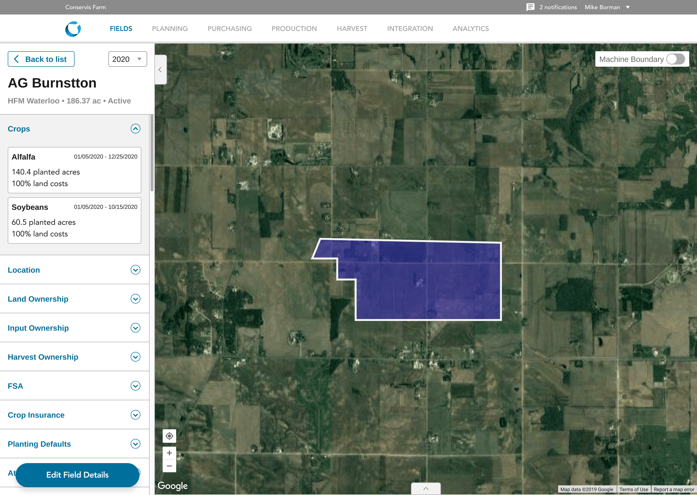
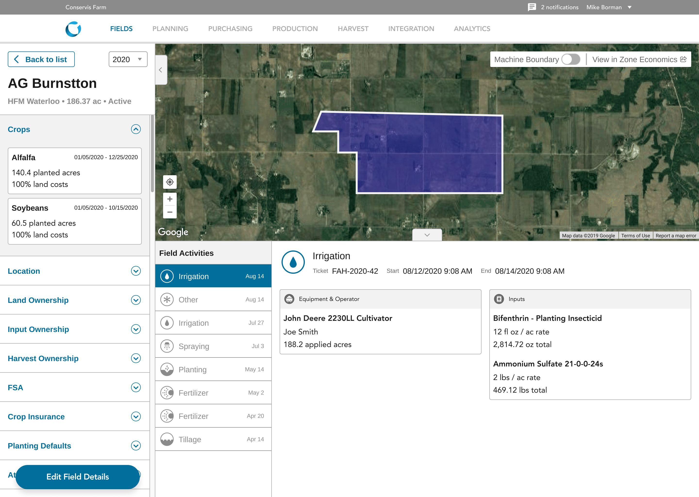
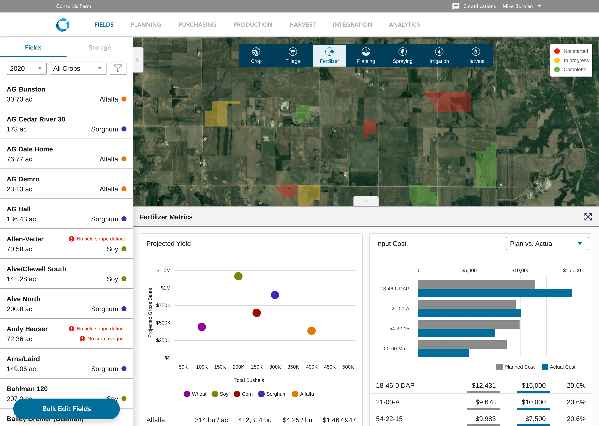

Numbers rooted in soil.
Conservis is the world leader in farm management software. Growers use it to track field activities, manage inventories, and analyze yields. At Foundry I led design as we expanded their product suite: a mobile app for the field and new tools for making sense of financial data.
If the essential data on a farm comes from the field, capture it right there. The mobile app keeps every worker current on what needs doing and lets them log progress as they work. With real-time data on planting, irrigation, harvest yields, and grain storage, a grower can keep tabs on every single acre.
Growers think field by field.
Every grower we talked to wanted actionable data specific to their fields, crops, yield per acre, and conditions. Even when they're planning and doing accounting from the office, they think about the operation field by field. So the dashboard puts a map at its core: the latest numbers always connect to a real place.



Farm to (financial) table.
Every farm is different, so every dashboard is personalized. Growers rotate crops, change their mix, and shift focus through the season and year to year. As seasons change, so must widgets and dashboards. During handoff we left the Conservis team with the documentation and the ability to build their own new widgets as needed.
Even for the most successful growers, frequent loan applications are a fact of life. That means translating handshake land agreements and bushels per acre into the kind of financial data a banker needs. The custom budget reports pull from everything in a grower's account, fertilizer costs to commodity prices, and bundle it into a clean, print-friendly PDF ready to hand a lender.

100%
Dashboard adoption across growers in North America, Australia, and South America
Bank-ready
A season of field data bundled into a lender-friendly document in a few clicks